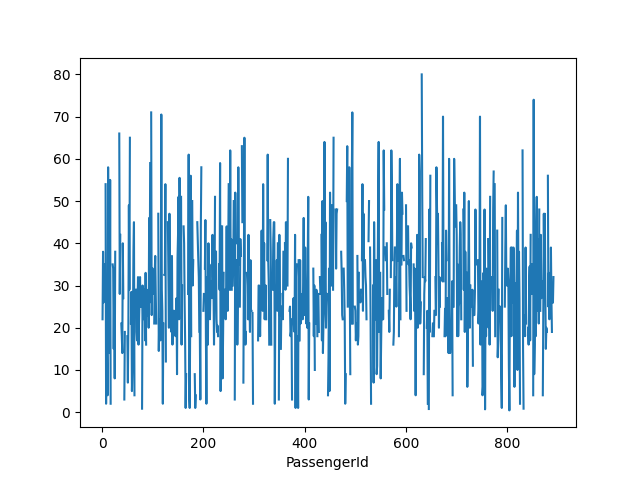

9. Introduzione a Pandas¶
Pandas una delle librerie pi importanti dell'ecosistema SciPy, e viene usata per la lettura ed elaborazione dei dati provenienti da sorgenti di vario tipo, come ad esempio file CSV o Excel, ma anche file di testo e database. Vediamo quindi brevemente come usare la libreria, tenendo presente che ne approfondiremo il funzionamento anche durante le lezioni successive.
9.1 Installazione e configurazione di Pandas¶
Al solito, provvediamo ad installare Pandas:
pip install pandas
Cos come per le altre librerie, nel prosieguo presupporemo che Pandas sia gi stato importato nel nostro script/notebook:
import pandas as pd
9.2 - Pandas e la gestione dei dati¶
Pandas gestisce prevalentemente dati strutturati sotto forma tabellare, ossia simili a quelli comunemente contenuti all'interno dei fogli di calcolo o nei database. Questi dati sono sicuramente tra i pi diffusi ed utilizzati nel contesto dell'analisi dei dati, ovviamente escludendo le immagini: in tal senso, per modellarli, Pandas ci mette a disposizione un'apposita struttura denominata dataframe.
I dataframe sono quindi delle strutture atte a contenere dati di ogni tipo. Questi sono normalmente organizzati in righe e colonne, in maniera del tutto analoga a quella in cui sono organizzati i fogli di calcolo ed i database. Importante anche sottolineare come, per convenzione, le singole righe rappresentino i campioni del dataset, mentre le colonne siano associati ai valori assunti dalle diverse caratteristiche, o feature, di ciascun campione.
Facciamo un esempio usando il dataset Titanic, che uno tra i pi utilizzati a scopi di sperimentazione. Per prima cosa, generiamo un dataframe rappresentativo dei dati contenuti nel dataset:
df = pd.read_csv('titanic.csv')
Usiamo il metodo head() per mostrare a schermo le prime cinque righe del dataframe.
>>> df.head()
PassengerId Survived Pclass Name Sex Age SibSp Parch Ticket Fare Cabin Embarked
0 1 0 3 Braund, Mr. Owen Harris male 22.0 1 0 A/5 21171 7.2500 NaN S
1 2 1 1 Cumings, Mrs. John Bradley (Florence Briggs Th... female 38.0 1 0 PC 17599 71.2833 C85 C
2 3 1 3 Heikkinen, Miss. Laina female 26.0 0 0 STON/O2. 3101282 7.9250 NaN S
3 4 1 1 Futrelle, Mrs. Jacques Heath (Lily May Peel) female 35.0 1 0 113803 53.1000 C123 S
4 5 0 3 Allen, Mr. William Henry male 35.0 0 0 373450 8.0500 NaN S
Vediamo rapidamente che ad ogni passeggero sono associate delle feature, di cui possiamo inferire il tipo (lo verificheremo a breve):
| Feature | Descrizione | Tipo |
|---|---|---|
| PassengerId | Identificativo univoco del passeggero. | Intero |
| Survived | Stabilisce se il passeggero sopravvissuto. | Intero/booleano |
| Pclass | Rappresenta la classe del passeggero | Intero |
| Name | Nome completo del passeggero | Stringa |
| Sex | Genere del passeggero | Stringa |
| Age | Et del passeggero | Decimale |
| SibSp | Crasi di "Siblings/Spouses", rappresenta il numero di fratelli/sorelle/coniugi a bordo per ogni passeggero | Intero |
| Parch | Crasi di "Parents/Children", rappresenta il numero di genitori/figli a bordo per ogni passeggero | Intero |
| Ticket | Rappresenta l'identificativo per il ticket del passeggero. | Stringa |
| Tariffa | Rappresenta la tariffa pagata dal passeggero. | Decimale |
| Cabin | Rappresenta la cabina in cui allogiava il passeggero. | Stringa |
| Embarked | Rappresenta il punto di imbarco del passeggero. | Stringa |
Verifichiamo che le nostre ipotesi sul tipo di dato siano corrette; per farlo, possiamo usare la propriet dtypes del dataframe:
>>> df.dtypes
PassengerId int64
Survived int64
Pclass int64
Name object
Sex object
Age float64
SibSp int64
Parch int64
Ticket object
Fare float64
Cabin object
Embarked object
dtype: object
Notiamo subito la presenza di tre tipi di colonna, ovvero int64, float64 ed object. Laddove i primi due sono autoesplicativi, merita una particolare menzione il tipo object, che viene associato automaticamente a tutte le stringhe.
Suggerimento
Normalmente, usare il tipo object comporta diversi problemi nella successiva fase di analisi dei dati. Potrebbe quindi essere una buona idea parametrizzare la funzione read_csv mediante il parametro dtype, che accetta un dizionario che specifica il tipo di una o pi colonne. Ad esempio, se volessimo specificare che i nomi sono delle stringhe, potremmo usare il tipo string:
>>> types = {'Name': 'string'} >>> df = pd.read_csv('train.csv', dtype=types) >>> df.dtypes # ... Name string # ...
Appare chiaro come il dataset ci illustri numerose propriet per ogni passeggero imbarcato. Queste potranno quindi essere utilizzate per un'analisi approfondita della struttura dei dati sotto diversi aspetti e punti di vista; ne parleremo pi estesamente nel seguito.
9.2.1 - Le Series¶
Abbiamo visto come ogni dataframe sia in realt composto da diverse colonne, ciascuna rappresentativa di una feature specifica. Nella pratica, Pandas ci offre un modo per rappresentare singolarmente ciascuna di queste colonne, mediante un oggetto di classe Series. Ad esempio, potremmo estrarre la serie relativa agli identificativi numerici dei passeggeri:
names = df['Name']
names.head()
# Output restituito
0 Braund, Mr. Owen Harris
1 Cumings, Mrs. John Bradley (Florence Briggs Th...
2 Heikkinen, Miss. Laina
3 Futrelle, Mrs. Jacques Heath (Lily May Peel)
4 Allen, Mr. William Henry
Name: Name, dtype: object
9.2.1.1 - Accesso agli elementi di una serie¶
Possiamo accedere ad un singolo elemento di una serie mediante una classica procedura di indicizzazione. Notiamo infatti come ogni campione all'interno della serie sia associato ad un indice numerico crescente il cui valore iniziale pari a 0; pertanto, possiamo accedere all'\(i\)-mo elemento della serie richiamando l'\(i-1\)-mo indice, esattamente come accade per le liste o le sequenze.
names[0]
# Output restituito
'Braund, Mr. Owen Harris'
Nota
L'indicizzazione pu essere anche usata per impostare il valore associato ad uno specifico indice della serie.
9.2.1.2 - Accesso agli elementi del dataframe¶
L'accesso agli elementi del dataframe pu avvenire attraverso diverse modalit. In primo luogo, possiamo accedere allo specifico valore di una feature di un dato campione mediante il chained indexing:
df['Age'][1]
# Output restituito
38
In alternativa, possibile usare la funzione loc(row_idx, col), che permette di accedere al valore assunto dalla feature col per l'elemento in posizione row_idx:
df.loc[1, ('Age')]
# Output restituito
38.0
La funzione loc() pu operare anche su delle slice di dati:
df.loc[1:5, ('Age')]
# Output restituito
1 38.0
2 26.0
3 35.0
4 35.0
5 NaN
o su insiemi di feature:
df.loc[1:5, ('Age', 'Sex')]
# Output restituito
Age Sex
1 38.0 female
2 26.0 female
3 35.0 female
4 35.0 male
5 NaN male
Sottolineamo che la funzione loc() opera sugli indici di riga. In questo caso, il nostro dataframe ha degli indici di riga interi, assegnati automaticamente in fase di lettura del dataframe. Nel caso decidessimo di usare una colonna del dataframe come indice, potremmo usare il metodo set_index():
df = df.set_index('Ticket')
Notiamo che, come al solito, le funzioni lavorano sul valore, e non sulla reference. Di conseguenza, se omettessimo l'assegnazione, df rimarrebbe invariato. Un modo per evitare di usare ogni volta l'operazione di assegnazione quello di impostare il parametro inplace a True:
df.set_index('Ticket', inplace=True)
In alternativa, possiamo decidere di impostare l'indice direttamente nel metodo read_csv impostando il parametro index_col:
df = pd.read_csv('titanic.csv', index_col='Ticket')
In questo caso, la funzione loc dovr essere utilizzata usando come parametri di lettura per righe i nuovi indici. Ad esempio:
df.loc['STON/O2. 3101282', 'Name']
# Output restituito
'Heikkinen, Miss. Laina'
Oltre alla funzione loc() Pandas ci mette a disposizione la funzione iloc(), la quale ci offre la possibilit di selezionare un sottoinsieme di campion del dataframe mediante indici interi (da cui la i):
df.iloc[2:5, 2:4]
# Output restituito
Pclass Name
Ticket
STON/O2. 3101282 3 Heikkinen, Miss. Laina
113803 1 Futrelle, Mrs. Jacques Heath (Lily May Peel)
373450 3 Allen, Mr. William Henry
9.2.2 - Maschere booleane¶
Supponiamo di voler selezionare soltanto gli uomini maggiorenni presenti nel dataset del Titanic. Per farlo, possiamo usare un'istruzione che implementi delle logiche di tipo booleano:
men = df[(df['Age'] > 18) & (df['Sex'] == 'male')]
men.head()
PassengerId Survived Pclass Name Sex Age
0 1 0 3 Braund, Mr. Owen Harris male 22.0
4 5 0 3 Allen, Mr. William Henry male 35.0
6 7 0 1 McCarthy, Mr. Timothy J male 54.0
12 13 0 3 Saundercock, Mr. William Henry male 20.0
13 14 0 3 Andersson, Mr. Anders Johan male 39.0
Nella pratica, stiamo filtrando il dataset in base all'AND logico tra due condizioni:
df['Age'] > 18: questa condizione genera una maschera booleana cheTruesoltanto se l'et per quel passeggero maggiore di 18 anni;df['Sex'] == 'male': questa condizione genera una maschera booleana che vera soltanto se il genere del passeggero maschile.
9.2.3 - La funzione groupby¶
Possiamo sfruttare la funzione groupby per raggruppare insiemi di dati (normalmente pertinenti a categorie).
Ad esempio, potremmo raggruppare i passeggeri per genere:
>>> df.groupby(['Sex'])
Possiamo ovviamente estrarre delle statistiche a partire da questi raggruppamenti. Vediamo, ad esempio, l'et media dei passeggeri di sesso femminile e maschile:
>>> df.groupby(['Sex'])['Age'].mean()
Sex
female 27.915709
male 30.726645
Name: Age, dtype: float64
9.3 - Scrittura e lettura dei dataframe¶
9.3.1 - Lettura di dati da sorgenti eterogenee¶
Nel nostro primo esempio abbiamo usato la funzione read_csv per creare un dataframe partendo dai dati memorizzati in un file in formato CSV. Tuttavia, Pandas supporta molti altri formati.
Ad esempio, potremmo provare a leggere un file Excel:
df = pd.read_excel('dati.xlsx')
Attenzione
Per leggere (e scrivere) da (su) Excel necessario installare la libreria openpyxl (pip install openpyxl).
In alternativa, pu essere letto un file in formato JSON, oppure ancora direttamente un database:
df = pd.read_json('dati.json')
df = pd.read_sql(SQL_QUERY)
Esiste un elenco completo delle (numerose) funzioni disponibili, che possono essere individuate sulla reference. In generale, comunque, la sintassi sempre read_*(data_source), con * da sostituire con il tipo di sorgente dati (csv, excel, etc.).
9.3.2 - Scrittura di dati su destinazioni eterogenee¶
Possiamo anche scrivere un dataframe su file mediante le funzioni duali alle read_, che usano il suffisso to_ seguito dall'estensione del file destinazione. Ad esempio, potremmo scrivere un file CSV con il metodo to_csv:
df.to_csv('train.xlsx')
9.4 - Aggiunta di feature e dati¶
Immaginiamo adesso di voler aggiungere una nuova feature ad un dataframe gi esistente. Per farlo, iniziamo creando un dataframe da zero:
df = pd.DataFrame([1,2,3,4,5], columns=['one'])
# Output restituito
one
0 1
1 2
2 3
3 4
4 5
Possiamo aggiungere una nuova colonna semplicemente usando l'operatore di assegnazione e specificandone il nome:
df['two'] = df['one'] * 2
# Output restituito
one two
0 1 2
1 2 4
2 3 6
3 4 8
4 5 10
Possiamo poi inserire nuovi campioni in coda al dataframe. Per farlo, dovremo prima creare un nuovo dataframe dalle dimensioni coerenti con quello gi esistente, e poi usare la funzione concat():
df_add = pd.DataFrame([[6,7]], columns=['one', 'two'])
df = pd.concat([df, df_add])
one two
0 1 2
1 2 4
2 3 6
3 4 8
4 5 10
0 6 7
Notiamo che la funzione concat() accetta, tra gli altri, il parametro axis. Se questo uguale a zero (come lo di default), la concat() effettua la concatenazione per righe; se pari ad 1, invece, la concatenazione avviene per colonne. Tuttavia, importante sottolineare come la concatenazione avvenga anche nel caso le misure non siano completamente coerenti: infatti, se provassimo ad effettuare una concatenazione per colonne, avremmo un risultato del tipo:
pd.concat([df, df_add], axis=1)
# Output restituito
one two one two
0 1 2 6.0 7.0
1 2 4 NaN NaN
2 3 6 NaN NaN
3 4 8 NaN NaN
4 5 10 NaN NaN
I valori relativi alle righe con indice che va da 1 a 4, che ovviamente non saranno presenti, saranno automaticamente impostati a NaN, acronimo di Not a Number.
9.5 - Visualizzazione dei dati in Pandas¶
Pandas ci offre un supporto nativo a Matplotlib per permettere la visualizzazione dei dati contenuti all'interno di un dataframe.
In tal senso, possiamo usare la funzione plot() su una serie o su un intero dataframe; ad esempio, potremmo plottare le et dei passeggeri:
df['Age'].plot()
plt.show()
ottenendo il risultato mostrato in figura:

Possiamo anche fare il plot dell'intero DataFrame:
df.plot()
plt.show()
che risulter nella seguente figura:

Ovviamente, possibile usare Pandas anche per fare il plot di altri tipi di grafico, come ad esempio gli istogrammi. Per farlo, si usano le apposite sotto-funzioni di plot:
df['Age'].plot.hist()
plt.show()
Il risultato mostrato in figura.

Pandas e Seaborn
Pandas si integra in maniera naturale anche con la libreria Seaborn, di cui tratteremo nella prossima lezione.
9.6 - Operazioni statistiche sui dataframe¶
Pandas ci mette a disposizione delle funzioni, simili a quelle offerte da NumPy, per calcolare delle statistiche per ciascuna delle colonne presenti in un DataFrame. Ad esempio:
>>> df.mean()
PassengerId 446.000000
Survived 0.383838
Pclass 2.308642
Age 29.699118
SibSp 0.523008
Parch 0.381594
Fare 32.204208
dtype: float64
Ovviamente, esistono funzioni anche per calcolare varianza (df.var()), mediana (df.median()), deviazione standard (df.std()), e via discorrendo.
Particolarmente interessante la funzione describe(), che ci mosta tutte le statistiche pi significative per ognuna delle feature considerate.
>>> df.describe()
PassengerId Survived Pclass Age SibSp Parch Fare
count 891.000000 891.000000 891.000000 714.000000 891.000000 891.000000 891.000000
mean 446.000000 0.383838 2.308642 29.699118 0.523008 0.381594 32.204208
std 257.353842 0.486592 0.836071 14.526497 1.102743 0.806057 49.693429
min 1.000000 0.000000 1.000000 0.420000 0.000000 0.000000 0.000000
25% 223.500000 0.000000 2.000000 20.125000 0.000000 0.000000 7.910400
50% 446.000000 0.000000 3.000000 28.000000 0.000000 0.000000 14.454200
75% 668.500000 1.000000 3.000000 38.000000 1.000000 0.000000 31.000000
max 891.000000 1.000000 3.000000 80.000000 8.000000 6.000000 512.329200